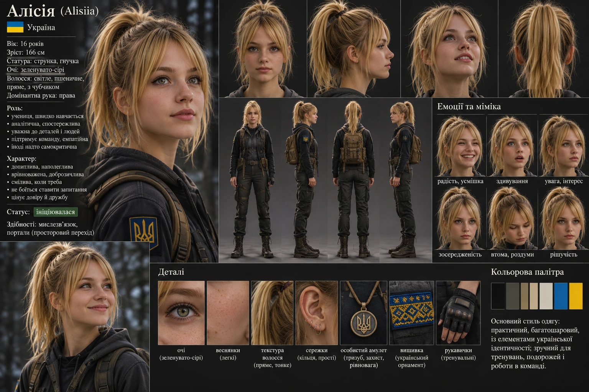

ОСНОВНА ІНФОРМАЦІЯ
Від першого контакту до наставництва
Алісія — українська дівчина-підліток, яка стає характерницею після того, як уперше відчуває думку свого найкращого друга через мислезв’язок. На початку її історії їй п’ятнадцять років. Ініціація відкриває перед нею новий світ, до якого вона прагне потрапити настільки сильно, що готова сперечатися з батьками й шукати допомоги самостійно.
Згодом Алісія опановує портали, проходить навчання, переживає важке поранення та психологічне відновлення. У подальших подіях вона вже не лише навчається сама, а й допомагає іншим характерникам розвивати здібності.
Ім’я: Алісія
Походження: Україна
Вік на початку історії: 15 років
Статус: ініційована характерниця
Здібності: мислезв’язок, відкриття порталів і просторові переходи
Навчання: тренування з характерниками та Мольфаром
Близькі й наставники: батьки, найкращий друг, Дмитро, Мольфар
Зовнішність: візуальний образ відповідає затвердженій ілюстрації; текстові рукописи не дають повного опису рис обличчя
ХАРАКТЕР І СПІЛКУВАННЯ
Енергійність, допитливість і прямота
Алісія емоційна, непосидюча й дуже балакуча. Вона швидко захоплюється новими можливостями, легко переходить від однієї думки до іншої та не завжди встигає пояснити співрозмовникам увесь хід своїх міркувань. Навіть через мислезв’язок її думки можуть летіти хаотичним потоком.
Вона наполеглива й неохоче приймає відмову, особливо коли переконана, що йдеться про важливу можливість. Водночас Алісія здатна визнавати небезпеку й дослухатися до тих, кому довіряє. Її прагнення діяти іноді випереджає досвід, через що наставникам доводиться нагадувати їй про обережність.
Після важкого поранення вона переживає психологічно складний період. Фізичне відновлення не усуває спогадів про пережите, і їй потрібен час, щоб знову почуватися собою.
ІНІЦІАЦІЯ ТА ПЕРШІ КРОКИ
Нова здібність змінює звичне життя
Перший важливий момент настає, коли Алісія вловлює думку найкращого друга. Вона розуміє, що стала частиною спільноти характерників, і разом із другом намагається відкрити портал, щоб зустрітися. Спроби не вдаються, тому Алісія вирішує знайти інструкторів.
Батьки спершу не вірять її розповіді й не хочуть відпускати доньку на космічну станцію. Дмитро особисто приходить до них, пояснює ситуацію та допомагає зняти недовіру. Після цього Алісія вирушає на навчання й поступово опановує можливості характерників.
Коли вона вперше самостійно подорожує порталами, захоплення новим світом бере гору над обережністю. Дмитро наздоганяє її під час мандрівки європейськими містами й проводить довгу розмову про безпеку та відповідальність.
НАВЧАННЯ З МОЛЬФАРОМ
Повернення до майстерності
Після психологічної травми Алісія працює з Мольфаром, щоб повернути навичку володіння мечем. Поступово тренування стають для неї не лише способом відновити вміння, а й можливістю знову відчути себе частиною спільноти.
Згодом вона регулярно відвідує тренувальний зал Мольфара, бере участь у спарингах і знайомиться з його учнями. Її досвід стає корисним для інших: разом із Мольфаром вона допомагає сімом учням відчути навичку відкриття порталів і зробити перші кроки до самостійного володіння нею.
Алісія пояснює принципи мислезв’язку, наголошує на необхідності контролювати власні думки та поважати особисті межі інших. Вона вже виступає не просто учасницею тренувань, а провідницею для новачків.
ВИПРОБУВАННЯ ТА ВІДНОВЛЕННЯ
Рішення допомагати попри небезпеку
Під час рятувальної операції на кислотному полі Алісія самостійно відкриває портали під людьми, які опинилися серед смертельно небезпечної речовини, і переносить їх на безпечну землю. Вона продовжує допомагати навіть тоді, коли сама опиняється в небезпеці.
Кислота тяжко ушкоджує її тіло. Дмитро встигає відкрити портал і врятувати Алісію разом з іншими людьми. Її стабілізують медичною капсулою, а повне відновлення проводять на орбітальній станції.
Фізично Алісія відновлюється, але пережите залишає психологічний слід. Вона машинально згадує біль і не одразу може повірити, що небезпека минула. Підтримка близьких і поступове повернення до звичних занять допомагають їй пройти цей етап.
ПОДАЛЬША РОЛЬ
Досвід, яким вона ділиться
У третій книзі Алісія продовжує подорожувати з Мольфаром і групою його учнів. Вона допомагає групі переходити між місцями, підтримує зв’язок із громадами через мислезв’язок і бере участь у навчанні нових характерників.
Її шлях показує перехід від імпульсивної новачки, яка прагнула якнайшвидше відкрити перший портал, до досвідченішої характерниці, здатної передавати знання та відповідати за інших.
ДОВІДКОВІ ДАНІ
Межі підтвердженого канону
Підтверджено рукописами
- На початку історії Алісії п’ятнадцять років.
- Вона має найкращого друга, через якого вперше відчуває мислезв’язок.
- Її батьки спочатку не погоджуються на навчання доньки, але після розмови з Дмитром дозволяють їй вирушити.
- Алісія опановує портали, проходить тренування та подорожує між містами й планами.
- Мольфар допомагає їй відновити навичку володіння мечем після психологічної травми.
- Під час рятувальної операції на кислотному полі вона зазнає тяжких ушкоджень і проходить медичне та психологічне відновлення.
- Пізніше допомагає Мольфару навчати групу з семи учнів.
Що взято з погодженого візуального образу
Світле волосся, зібране у хвіст, світлі очі, практичний темний одяг із українськими елементами та спорядженням. Це характеристики затвердженої ілюстрації, а не повний словесний опис із рукописів.
Що поки не встановлено текстом
Точний зріст, дата народження, повне ім’я, конкретне місце проживання, імена батьків та найкращого друга в опрацьованих фрагментах не встановлені. Вік 15 років підтверджено для початку її сюжетної лінії; точний вік у наступних подіях не уточнюється.
Появи в книгах
Книга 1: ініціація, знайомство з Дмитром, перші спроби відкрити портали, навчання та самостійні подорожі. Книга 2: тренування з Мольфаром, навчання його учнів, рятувальна операція на кислотному полі, медичне й психологічне відновлення. Книга 3: подорож із Мольфаром та групою учнів, переходи й контакти з громадами.